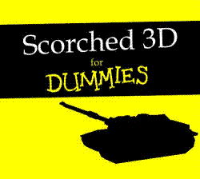

Written by : Ebonite, Illustration : Jaenis
INTENDED AUDIENCE This document assumes you are already aware of how to control your tank, manipulate the camera, and use the in game GUI. This document will instead try to explain some of the finer points of the game so can understand how and why certain things happen in the game.
INTRODUCTION Scorched Earth is an artillery game. For those unfamiliar with artillery style games, the idea is to destroy all other tanks on the field without being destroyed yourself. The winner of each round is the last tank left alive. The overall winner is the tank that wins the most rounds over the period of the game.
This goal is accomplished by launching various weapons at your targets while taking into account gravity, wind, terrain, and your opponent’s defences. You are tasked with aiming your tank by determining the Power (distance), Elevation (how steep a slope your shot is launched at), and a new element required by the 3-D nature of Scorched3D, Rotation (the adjustment left or right that your shot will initially travel).
TIME
Scorched3D games are made up of a certain number of rounds, which themselves
are made up of a number of turns.
During each turn, players that are still alive get a chance to make a move.
Once all players have moved the results play out on the map and the next turn
will start.
Each turn lasts roughly 40 seconds, depending on the server settings and how soon you (and any others) complete all your adjustments.
Rounds are generally a maximum of 10 - 15 turns, depending on the server settings, and may include a "Shopping" period at the beginning of the round where you can buy weapons and accessories for use in the current round. This period also gives the opportunity to sell unused weapons and accessories to earn extra money.
Rounds will end when either one or no tanks are left alive, or the turn limit has been reached, regardless of how many tanks are alive. Dying in a round will prevent you from playing until the next round starts.
Games are a series of rounds in which kills and money accumulate, and end when the set number of rounds has occurred. Once the round limit has been reached, a winner is determined, and a new game begins with all totals reset to zero.
DEATH AND DYING
Tank Deaths
When a tank is destroyed, it blows up in a random way. Players have no input on
the way their tank dies. The random death explosions include the Nuke, Baby
Nuke, Heavy Riot Bomb, Ton of Dirt, and Funky Bomb. This is the only way you
can witness a Funky Bomb in the first round of a game when there is no shopping
period. It is NOT someone cheating.
Generally, the tanks are spread out enough on a map that death explosions pose no threat to other tanks (except perhaps when the explosion is a funky bomb). However if you are lucky enough to kill other tanks with the explosion of a tank you killed, you will be credited with those kills and the corresponding money awards. However, the explosion is random and you might find yourself the target of your own kill. If you are killed by an explosion of a tank you killed, you will be charged with a suicide and will loose money.
Self Kills: Suicides
If you kill yourself, whether on purpose, by accident, or through means beyond
your control (i.e. your target died and dropped a Funky Bomb, which killed you
in turn), you will lose one kill from your total, even into the negatives. You
will also loose an amount of money equal to the amount awarded for killing a
tank with a health level identical to yours. Money will not go into the
negatives, but $0 is not good. A suicide will be tallied on your overall stats,
as well.
Team Kills
In a team game, there is also the risk of killing team mates. Should the
unfortunate happen and you kill a team mate, by whatever means, you will be
charged with a Team Kill on your stats. Like with a suicide, you will have one
kill docked from your total and lose a sum of money equal to killing a tank
with identical health. Unlike a suicide, there is a chance you'll still be
alive to atone for your error.
WEAPONS
All weapons need to be chosen before they are used. Only one weapon can be
chosen (or fired) at one time. All can be activated by both the menus and the
GUI.
Shopping
Many servers do not allow shopping on the first round of a game. The only
weapon any player has available is the Baby Missile, which comes in unlimited
supply. Beacuse of the small damage effect, you have to accurately hit your
target to kill them.
Weapons are bought in bundles, with anywhere from one to twenty individual weapons per bundle. You need to be able to afford the entire bundle in order to get any weapons of that type. Weapons can be sold individually for about 80% of the individual value (bundle price divided by bundle size).
Generally speaking, the more expensive a weapon is (bundle price divided by bundle size), the more powerful it is, and thus, the more damage it does, to both tanks and terrain. But, the more expensive a weapon is, the fewer of them you will be able to purchase. A common course of action new players take is to buy as many nukes as the can, generally about six. Sure, they want to be certain that they kill their target, but it is more likely that they will miss, particularly on their first shot, and then they've just wasted one warhead (of their six) and several $.
If you choose to purchase only a few large scale weapons, do not be surprised to find yourself broke and out of ammo at the end of a round or two. At that point, you'll be forced to use the infinite Baby Missiles, which limits your scoring ability when others have more powerful weapons.
MIRV weapons : Mirv, Spread Mirv, and Death Heads
These weapons split up into multiple warheads at the maximum peak of their
deployment. This split will happen only in midair and they will fail to split
or detonate if they hit the ground before they reach their peak.
Seeker class weapons: Diggers, Sandhogs, and Funky Bombs
These weapons are multi-part weapons that split up on contact with the ground.
These particular weapons also seek out tanks in their secondary form, and are
thus more effective if you miss. Diggers and Sandhogs release mini-warheads
into the ground where they seek tanks from underground and come up under them.
Funky Bombs explode on contact with the ground and release several mini-bombs
into the air that seek out tanks while in flight. None of these weapons
guarantee a hit, they are only more likely to hit. And all of these weapons
expend their secondary warheads immediately upon contact with bedrock (the
bottom of the map).
Hole-y Weapons: Riot Bombs, Riot Blasts and Diggers
Most weapons create an explosion that damages both tanks and terrain. Hole-y
weapons however do no damage to tanks, they only destroy terrain. These weapons
are useful if you need to put a crater somewhere convenient. A good tactic for
these weapons is to target tanks with no parachutes, causing them to fall to
their deaths.
Gravity Weapons: Rollers and Napalm
These weapons are affected by gravity once they contact the ground. Rollers are
multi-part weapons that release several rolling spheres when they touch the
ground. Each of these spheres then rolls downhill, exploding when they make
contact with a tank or when their fuse runs out (about 8 seconds). Napalm
ignites when it hits the ground, and then "flows" downhill, burning everything
in it's path. Napalm burns for a set period of time.
Tracers: Smoke and Regular
Tracers have no effect on the environment other than to show you where your
shot will land. Regular tracers only show you the impact point of your current
aim settings. Smoke tracers show you the entire path of the weapon along its
flight. While everyone will see the tracer the round it is fired, only you will
see the marks in following turns. These are useful if you want to be sure a
shot clears every obstacle on the way to a target.
ACCESSORIES
All accessories need to be activated before they are used. Some can be
activated with keyboard shortcuts, and all can be activated by both the menus
and the GUI.
Parachutes
The single most important item in the game. Parachutes negate any and all
damage you would receive from falling. Most weapons have two parts, direct
damage from the blast, and a resulting crater. If the blast does not kill a
tank, the resulting fall into the crater usually will. Falling damage is the
leading cause of tank deaths. Help stop this by buying parachutes! Most newer
players do not want to spend the $10,000 on parachutes, preferring to get big
weapons, and are easy victims for the veteran players who use a single $150
Baby Digger to kill them, earning $6000 in the process. Don't give the vets an
easy kill. Buy parachutes!
Batteries
Probably the second most important item in the game, batteries are used to heal
your tank, at 10 hit points per battery. In addition to strengthening your tank
against further attack, batteries increase your available shot power, since
your shot power is directly related to your tank's health. Shot Power = Tank
health * 10
Reflective Shields: Mag, Heavy Mag, and Force
While all shields reduce the amount of damage taken from an explosion (shields
DO NOT negate fall damage), the Mag, Heavy Mag, and Force shields will actually
cause any shot that directly hits them to bounce off. This does use some of the
shield's energy (10 - 20 points), but generally prevents a close hit that could
do far more damage. Mag and Heavy Mag shields only protect the top of a tank,
like umbrellas with the Heavy Mag being a larger umbrella, while the Force
shield completely surrounds the tank.
Fuel
Fuel is used to move your tank around the map. You can only shoot OR move your
tank in a given turn. Fuel is used form the GUI or the menu, and shows you an
area in which you can move with your current supply of fuel. The light area is
where you can move, the shaded area is beyond your mobility limit, either out
of range or too steep a slope. Double click in the lighted area to set your
move order.
WIND
Wind will affect your shot as long as your shot is in the air. Wind can blow in
any direction at one of six velocities ranging from zero (no wind) to five
(very strong wind). Depending on the direction you're shooting, wind may
increase or decrease the distance of your shot and almost certainly blow your
shot left or right of your intended direction. Plan your shots accordingly.
Wind will also affect rollers while they are on the ground (or underwater).
Fire some rollers at a flat piece of ground in any wind, and they will roll off
in the direction of the wind. You should also note that there is no air
friction in Scorched3D, so any weapon fired at a particular aim setting will
travel the same path as any other weapon fired at that same setting, whether it
is a tracer, nuke, or Death Head.
WALLS
There are three types of walls around the map in Scorched3D. Each type of wall
has a different effect on any shot that impacts with it. Each wall has a
different colored buoy associated with it for easy identification.
Concrete
This type of wall stops all weapons that hit it. Any weapon that hits it
immediately detonates. This wall has grey buoys.
Bounce
This type of wall will cause any shot to bounce off it like a mirror. A shot
then continues in its new direction until it impacts the ground. This wall has
blue buoys.
Warp or Pass-Through
This type of wall teleports shots to the opposite side wall of the map with no
changes to its angle or power. Handy in high wind rounds when you cannot reach
other tanks by a direct line. AUTO AIM DOES NOT WORK THROUGH THESE WALLS. Your
tank will line up in a direct line to the spot you designate, NOT line up
through the wall, even if it is closer that way. This wall has yellow buoys.
MONEY
There are four ways of earning money, winning a round, wounding a tank, killing
a tank, and interest. Wounding a tank gives you money based on how much damage
you do in hit points. Killing a tank gives you money for damage in hit points
plus a "kill bonus". Killing a tank with one source of damage is worth more
than killing it with several sources (i.e. direct explosion OR a fall is worth
more than explosion AND a fall). Tanks in perfect health are worth more than
damaged ones, and you do get money for the hit points added when a player uses
batteries. The weapon used is factored into the money awarded so that more
powerful weapons give less money. No money is awarded for damage to shields.
Winning a round
Winning a round awards the most amount of money. It also gives the winner(s) a
round point, this point is the single most important factor when figuring the
overall game winner.
Interest
Like at a bank, you will earn interest on any money you have "stored". Interest
is computed and added at the end of every round, at the percentage set on the
server. Any money not spent during the shopping period of a round, plus all
money earned during the course of the round is tallied for interest at the end
of that round. This total is then available during the shopping period of the
next round. Interest is not earned on any weapons or accessories you currently
possess.